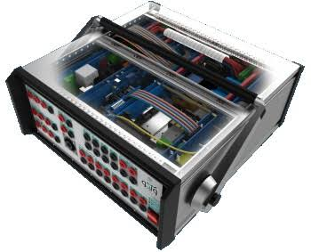

Our Products
VEBKO AMT 105
The VEBKO AMT 105 is a state-of-the-art machine designed to perform a wide range of electrical testing and commissioning services.
- Features:
- • Mini substation maintenance and commissioning
- • Transformer Testing
- • MV and HV Breaker Testing
- • Instrumentation Transformer Testing (CTs and VTs)
- • IED / Relay Installation and Testing
- • Retrofitting and Installation of panels
- • IEC 61850 implementation / Substation Automation
- • Integration of systems
- • Data management and collection
- • Electrical installation
- • MV breaker maintenance and repair (oil and vacuum)
- • Commissioning (Relays, Auto recloses, CTs, VTs, Power Transformers, MV and HV Circuit Breakers, mini substations, and substations)
- • Battery charger maintenance
- • Battery charger commissioning
- • Cold commissioning
- • Hot commissioning
- • Panel wiring
- • Fault finding on panels
- • Field services
- • Cable fault location
- • Pressure testing on MV circuits
- • Relay configuring